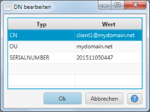

DN bearbeiten
Dieser Dialog unterstützt bei der Bearbeitung von "Distinguished Names" (DN)

Ein DN besteht aus mehreren "Relative DNs" (RDN). Jeder Zeile in der Tabelle stellt einen RDN dar. Durch die Typ-Auswahl
kann der gewünschte Typ für den RDN in der Typ-Spalte gewählt werden. In der Wert-Spalte kann der zugehörige
Wert eingetragen werden.